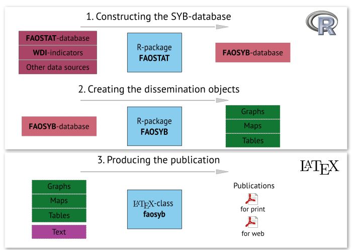

Efficiency and Effectiveness: The FAO Statistical Yearbook
Amy Heyman, Markus Kainu & Filippo Gheri
April 15, 2015
Regular slide with incremental list
Same with numbered bullets
- First
- Second
- Third
Image with caption text
Statistical Yearbook process